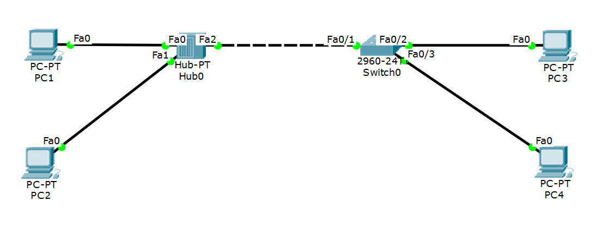
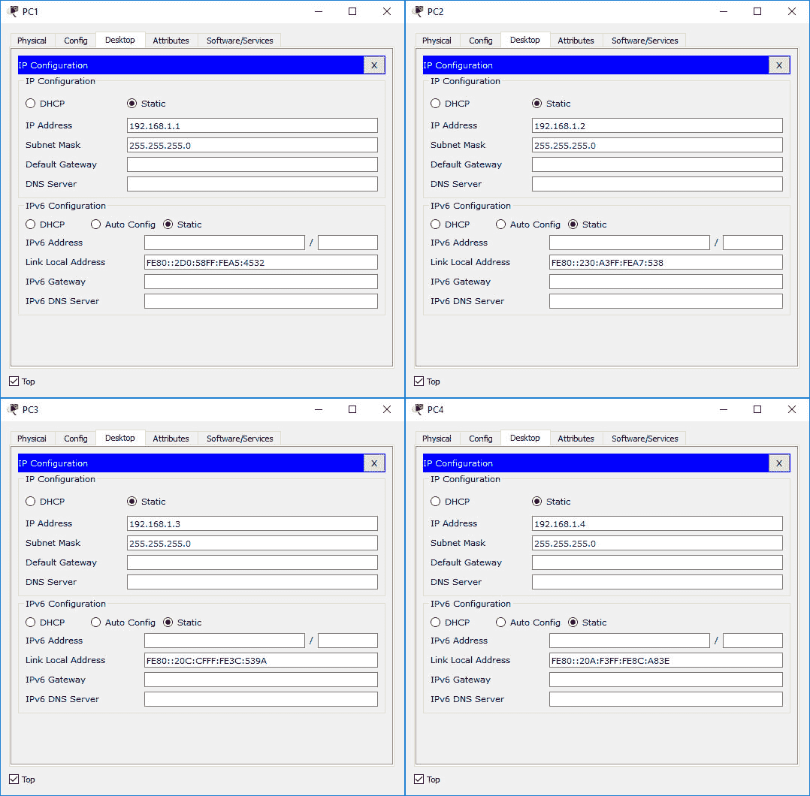
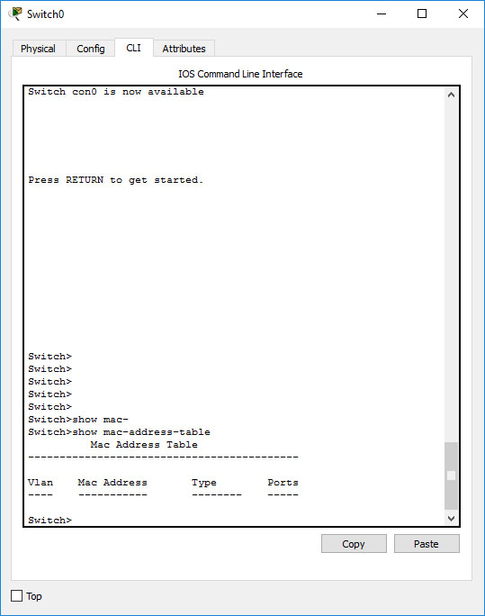
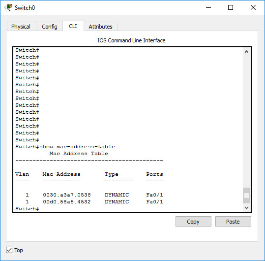
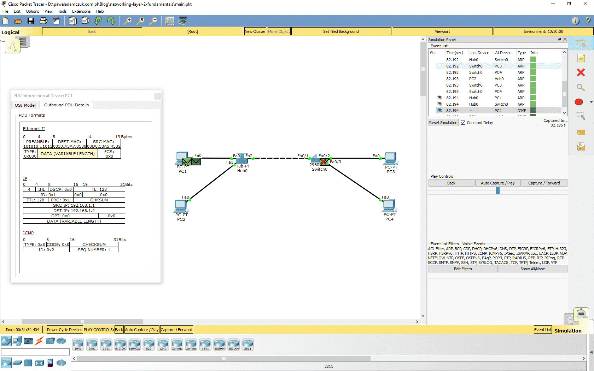
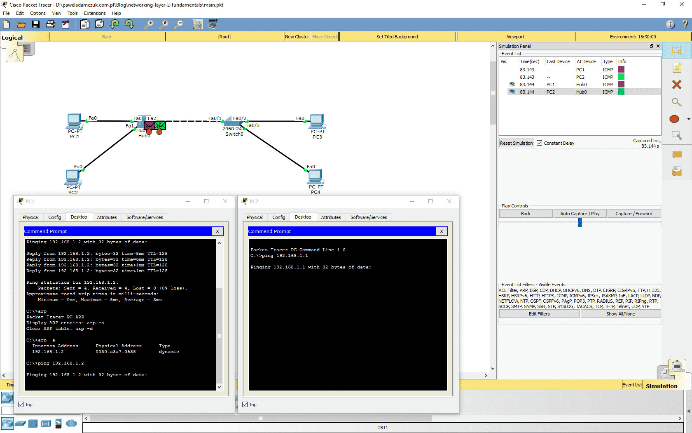
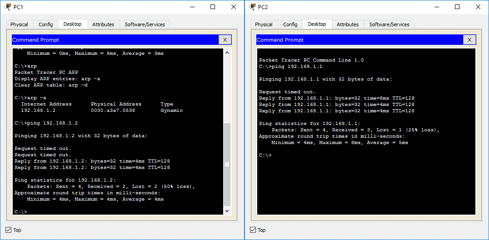
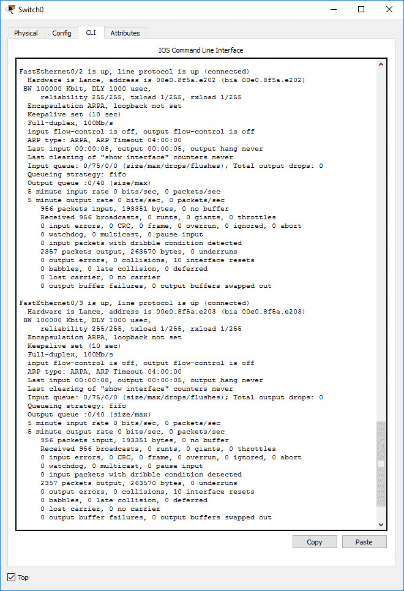
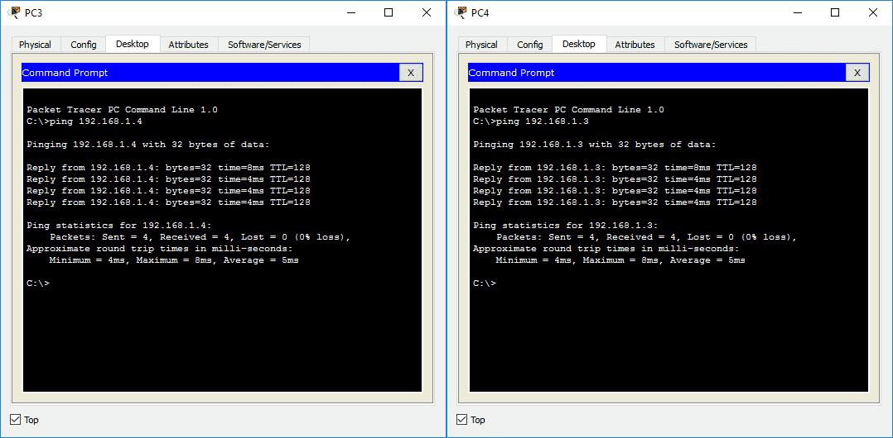

In this article I focus on the first layer of the TCP/IP network model, specifically the Ethernet standard. I will build a small simulated network and explore the frame flow through networking and end devices along with the protocols making the communication in the Network Access Layer possible. You can read a quick summary of the TCP/IP network model here and get an overview of the more extensive OSI model here. The software you can use to recreate the examples presented here by yourself is Cisco Packet Tracer. It is available for free for the Cisco Networking Academy members (the registration is a free process as well).
The MAC address
The MAC address, or the physical address, is the lowest unit of addressing that will concern us. A physical address is a unique identifier of a network interface, stored in read-only memory (hence sometimes called burn-in address). Each network interface, such as the NIC card of your laptop or your desktop computer, or a port in a switch, has a single MAC address assigned. Many devices will allow you to change this address to any desired value, however, it is not advised to do so. The physical address of a device is in principle unique, and MAC address conflicts are some of the hardest networking problems to troubleshoot.
The MAC address consists of six bytes – the first three form an Organizationally Unique Identifier and therefore can be used to identify the vendor of a network device. The rest of the address is left to the decision of the equipment manufacturer. The notation of the MAC addresses varies. You might see pairs of hexadecimal digits separated by colons or hyphens, with capital or small letters. Some devices (e.g. Cisco switches) use three groups of digits separated by dots. A thing to remember when recognising MAC addresses is that most notations consist only of hexadecimal digits, i.e. digits from 0 to 10 and letters a-f.
The same MAC address formatted in three different ways:
01:23:45:67:89:ab
01-23-45-67-89-AB
0123.4567.89ab

Some protocols utilise the possibility of sending Ethernet frames to all the devices within a broadcast domain (basically a network segment with a single router as a border gateway device). Such frames have the destination address ffff.ffff.ffff, or “all ones” when converted to binary format.
Switches > Hubs
A hub is just a bunch of wires connected together. It has no internal memory (unlike a switch). It retransmits every frame (a name for the data-link layer data unit) on all the interfaces (except the given frame’s ingress one) simultaneously. Hubs only support half-duplex Ethernet mode. This means that the communication is one-way only – when one device transmits, no other device in the collision domain can transmit at the same time. In our example, a single collision domain will contain the two end devices connected to the hub, the hub itself and one port of a switch. The collision avoidance and recovery is managed by the CSMA/CD process. You can read more about it here. Usually, you won’t have to be concerned with half-duplex communication and collision domains. Most of modern networks work in full-duplex mode and consist of switches – no hubs involved. It is still proper to know the concept, as it helps understand frame flow in larger networks.
Hubs are “dumb” devices, while switches are more “smart”. Switches contain memory that is used to buffer and queue incoming frames, so that full-duplex communication with multiple network devices is possible and the frames are directed to the exact location of their destination addresses, as opposed to the hubs, limiting the devices with half-duplex communication, enclosing them within a single collision domain and finally transmitting all the packets on multiple links simultaneously. Not only is it a security risk (the frames directed to one device can be sniffed by all other devices in the same collision domain, i.e. connected to the same hub), but also produces loads of unnecessary traffic, sent out from the hub only to be discarded by all the NICs except the one to which the packet was sent.
Switches achieve smaller loads on the links by sending out received frames on a single link (unless they are broadcast/multicast frames). A switch is able to identify and store the information about MAC addresses of the devices connected to its interfaces in a table called simply MAC-address-table (sometimes called CAM table). When a switch receives a frame whose destination address is not present in its MAC-address-table, it performs “flooding” – it sends out the frame on all its interfaces, hoping that the destination device will return some traffic so that the switch can learn to which of its interfaces the new device is connected. An entry in the MAC address table is deleted after its aging timer (renewed by picking up Ethernet frames on the entry’s port, from the corresponding MAC address) expires. The timer is set by default to 5 minutes on Cisco switches.
Say hello to my little CLI
To be able to efficiently manage configurations of Cisco devices and troubleshoot networks, you have to be able to get around the command line interface of the IOS software. We will be using many commands in the practical examples, but first remember a few things useful when dealing with the interface:
The ‘?’ key
The single most useful tool. At any point in time, type the question mark to see the elements of the menu you’re in, or the possible phrases and values completing the command you’re typing in.
The ‘tab’ key
It autocompletes the command you’re typing. If the command is ambiguous (eg. you input ‘te’ and there are ‘telnet’ and ‘terminals’ elements in the menu) it will print nothing. However, it will do the same if the command you typed in is invalid. To find out which one’s the case, hit the friendly ‘?’ button mid-command!
Implicit autocompletion
If you input only parts of the command, but all of the parts are unambiguous, you can hit enter and the command will work just as if you entered its full version. For example, the command:
>sh in F 0/1
wil give the same result as its full version:
>show interfaces FastEthernet 0/1
However, if you type in:
>sh i F 0/1
the terminal will print:
% Ambiguous command: "show i Fast 0/1"
because there is also an “ip” element in the main menu.
The CTRL-SHIFT-6 combination
The intuitive CTRL-C and CTRL-Z keystrokes work in some cases, exiting the sub-menus, but to stop procedures like ping or hostname resolution (the system tries to resolve any command you spell wrong as a hostname… and it takes some time) you need to know this handy combination.
The output modifiers
The output modifiers work like piping commands in *NIX. There’s no ‘grep’, but there is ‘include’. You can get more info on the output modifiers using the friendly ‘?’ button.
Building the network
A functional network might consist of just two hosts (end devices) connected with a crossover Ethernet cable. Where’s the fun in that, though?
The simple example network we will build will consist of four end devices, a hub (a concentrator) and a switch. Hubs are hardly in use any more, but they help to understand further concepts of switching in LAN networks.
You can download the Packet Tracer project or you can recreate it from scratch. I recommend the latter – it will give you some practice with the Cisco CLI and the Packet Tracer itself.
The network diagram
You will notice there are two kinds of Ethernet cables used. The ones between the end devices and the hub and the switch are straight-through Ethernet cables. The connection between the hub and the switch is a crossover cable. This distinction is not so relevant any more in modern context. Most devices have capability to detect the kind of cable and adjust accordingly. Still, it’s a thing to keep in mind when troubleshooting connections between some older devices. For a brief explanation, head here.
Once you add the devices and their connections in the Packet Tracer (make sure to use the same ports as the ones listed in the diagram), you have to do some basic configuration. We are not concerned with the network layer logical addresses at the moment, but we have to configure them to be able to generate traffic in Packet Tracer and trace those packets. Configure the IP addresses as shown below.
The hosts’ IP configuration

The switch requires some configuration as well. There are a couple of protocols turned on by default, namely STP, CDP and DTP. We don’t need any of those right now. STP stands for spanning tree protocol, implemented to avoid loops in switched networks and multiple VLAN environments. Our network is so small that we can plainly see there are no loops whatsoever. CDP is Cisco Discovery Protocol useful in central network device management scenarios. DTP is Dynamic Trunking Protocol. We will be only using the access mode on the switchports – no need for DTP as well. To turn all of these off (on the interfaces we will be using), enter the switch’s cli and use the following commands:
>enable
>configure terminal
>interface FastEthernet 0/1
>switchport mode access
>exit
>interface FastEthernet 0/2
>switchport mode access
>exit
>interface FastEthernet 0/3
>switchport mode access
>exit
>no cdp run
>exit
>copy running-config startup-config
Packet Tracer lets you export and import the device’s configuration to and from your hard drive. You can download the switch configuration file here. Keep in mind that any changes you make in the configuration menu are being saved in the running configuration only. They will be lost when you reboot the device, unless you save the running configuration as startup configuration using the last one of the commands listed above.
Get started
As we simulate some traffic in our network, we will be able to observe changes in the MAC address table of our switch and see the frame flow on the diagram. First of all, power cycle the devices. Wait for the switch to finish booting, fast forward the time a minute or two to eliminate the initial chatter and enter the simulation mode. The time is stopped, and you can advance it to see the events in the network. Enter the switch’s CLI and type in:
>en
>clear mac-address-table
to clear the table from any entries created during the PCs’ startup. Next, type:
>show mac-address-table
to see the table. It should be empty.

The table will remain empty until the switch receives traffic. Go ahead and forward time a few times. If you followed the configuration instructions, no packet should appear. Remember that this is a mere simulation – in reality, there are multiple protocols and services running on every host that generate all kinds of network traffic.
To generate traffic, we will use the ping command. Ping is a tool sending echo ICMP requests to a remote host. It is a protocol of a higher layer than the data-link layer, but, following the rules of the layer model, it is ultimately encapsulated in Ethernet frames. To ping PC2 from PC1, click on PC1, then switch to the “Desktop” tab and enter command prompt. First, clear the ARP protocol cache by using the arp -d command. The ARP protocol will be explained in the next article. For now, it will help demonstrate how broadcast Ethernet frames propagate all over the broadcast domain. Type in ping 192.168.1.2 and click enter. You will immediately see three or two frames appear in the networking stack of PC1. One of them is the ICMP echo request. It will probably get dropped, since no ARP entries corresponding to its destination IP are present. The other frame(s) is an ARP frame. All you need to know about this frame for now is that its destination MAC address is ffff.ffff.ffff. You can verify that by clicking the frame. You can now click “Capture/Forward” to see what happens with the frames. You can see that the PC1 keeps broadcasting ARP requests. It will receive an answer shortly and the ping command will recommence. Meanwhile, the broadcast frames are getting retransmitted by the hub and the switch alike – they have the broadcast destination MAC address, so even the switch is obligated to forward it to every device to which it is connected. As the ARP requests from PC1 and the response from PC2 reach the switch, entries in the MAC address table will be created. You can view the table again. There should be two entries in the table, both of them assigned to the same Ethernet port – FastEthernet 0/1. These are the entries for PC1 and PC2. From the switch’s perspective, they are both connected to the same physical link.

There are no entries for PC3 and PC4. No traffic originating from those hosts reached the switch, as the machines were not supposed to answer the ARP request – and they didn’t.
Forward the time until you see another ICMP frame appear.

Now you can follow the packet as it is sent and retransmitted by the hub. The hub transmits the frame on all its links, even to the switch. The switch drops the frame, as to forward it, it would have to send it back on the exact same link – both MAC addresses are assigned to the same interface in the MAC address table. That would make no sense.
Collisions
We are now ready to simulate a collision of frames in the hub’s collision domain. The ARP tables of PC1 and PC2 already have the needed entries, so this time, no preliminary ARP chatter will be needed. Forward the simulation so that the previous ping’s frames reach their destination and the command on PC1 ceases the transmitting. Now that the simulation is paused, enter the PC1’s terminal and ping PC2’s IP address. Without forwarding the simulation, open PC2’s terminal and ping PC1’s address. You should see two ICMP frames appear in the network stacks of the two end devices. Forward the time once. As the frames reach the hub, little flame marks will appear next to them. It is Packet Tracer indicating that a collision has occured. The frames get retransmitted, but all devices in the collision domain are able to detect the problem and they end up dropping the frames regardless of its destination. The frames are dropped by the PC2’s NIC as well – instead of being passed to higher layers in the networking stack and eventually to the ICMP echo service.

From this point on, the simulation scenarios might differ slightly. A random-time back-off mechanism of the NIC’s will get triggered. This means that the devices will wait a random period of time before trying to retransmit the frame, in order to avoid the next collision and eventual jamming of the link. The Packet Tracer simulation shows the process in a simplified way – in reality, when a collision occurs, the NIC’s will try to retransmit the frame a fixed number of times before dropping it. In the simulation, the ICMP packets are dropped right after the first collision is detected. The transmission of next ICMP frames occurs due to the ping tools still working on the end devices. The random time back-off mechanism is implemented in the data-link layer, even though it might seem like a ping tool’s feature when you analyse the simulated frame flow. Keep forwarding the time of the simulation. You will likely see many more collisions occur before the ping tools finish sending requests and display the response information. You will see the percentage packet loss statistic in the end devices’ terminals.

Multiple-collision-domains networks
Have a look at the network diagram, specifically the segment with the switch and two end devices connected to it. Can you see how many collision domains there are in this segment? Even though collisions will not occur on a full-duplex link, we still call individual full-duplex connections between devices “collision domains”. Therefore, there are two collision domains in this segment of our network. You can make sure the communication is full-duplex by using the ‘show interfaces’ command.

It is also an opportunity to further explore the MAC address table of the switch. Depending on how much simulation time you skipped, there might still be PC1 and PC2 entries in the table. Remember the aging timer is set to 300s by default – the entries might be already gone. Kepp track of the table as we perform the next steps of the simulation.
Full-duplex communication in a switched network should mean that no collisions will occur if we try sending two crossing ping requests between PC3 and PC4 at the same time. Let’s make sure that’s the case. Repeat the procedure from the previous point, this time sending the pings between PC3 and PC4. Forward the time and see the ARP request and ICMP frames traveling. You should see the entries for the MAC addresses of PC3 and PC4 appear in the swith’s table as the first ping packets reach it. This time, however, the new MAC addresses will have different ports assigned. The flooding will not occur, as the first ARP frames were broadcast frames anyway, and the switch could create the MAC address entries basing on those. After forwarding time until the ping requests finish, you will see much better results than on the hub network segment.

Keep in mind that were the two connections (PC3 <-> switch, PC4 <-> switch) in half-duplex mode, there would still exist two separate collision domains, but this time collisions may really occur. Still, they could only happen within a single collision domain, being one Ethernet cable in our case – because a switch divides a network into collision domains in this way. You can test that by switching both end devices’ Ethernet controllers to half-duplex mode and re-running the ping simulation.
Recap
The most important concepts covered above:
- network layer models
- ehternet frames
- Packet Tracer simulation basics
- basic commands in the Cisco IOS CLI
- Ethernet frame flow in a concentrated and a switched network
- difference between switches and hubs
- collision domains and broadcast domains
- frame collisions and its impact on networking performance
- editing and saving configuration of a Cisco switch
I am not a networking expert – if you notice any errors in the article, please send me an e-mail.